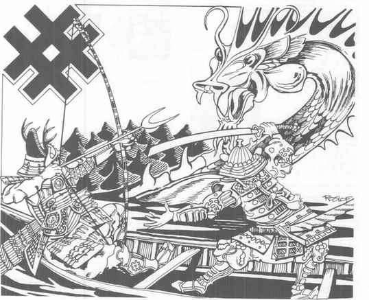
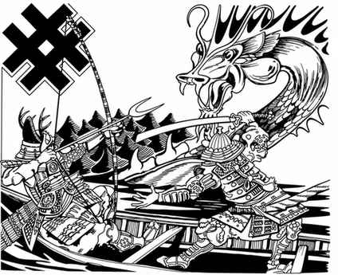

Yamamoto Date
Yamamoto Date 是守序善良英雄，AC 2，189 点生命值，15 级圣武士。他是皇帝之子，以战士能力、对父皇的忠诚、速度和伪装技巧闻名，拥有相当于 11 级盗贼的易容能力。他的魔法剑同时具备屠龙与锋锐能力，能对任何生物造成致命威胁。
Yoshi-Iye
Yoshi-Iye 是中立善良英雄，AC 2，109 点生命值，13 级游侠兼 5 级牧师、5 级吟游诗人。他奉战神 Hachiman 为主神，拥有传奇弓术；箭矢能击碎岩石，每次命中都造成高于普通弓箭的伤害。若危急时刻向 Hachiman 祈求援助，战神偶尔会亲自回应。

